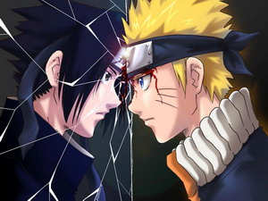

|
|
Naruto
(ナルト, Naruto?)
Es una serie
manga creada por Masashi Kishimoto, más tarde llevada al anime, sobre un ninja
adolescente llamado Naruto. El manga apareció publicado por primera vez por
Shūeisha en 1999 en el número 43 de la revista Shōnen Jump en Japón, y en ella
continúa su edición con a capítulo por semana, recopilados hasta ahora en 39
volúmenes
El éxito del manga hizo que su trama fuera adaptada a una serie de anime
originalmente transmitida por TV Tokyo que sólo empezó a ser traducida a otros
idiomas cuando llevaba mucho tiempo emitiéndose en Japón. Tanto manga como anime
han alcanzado una distribución notable en el extranjero previa a la exportación
debido a los numerosos fansubs que los han traducido alrededor del mundo.
El anime sigue el
argumento del manga con sólo algunas modificaciones menores, como
suavizar las lesiones y restar algo
de
fuerza a los combates, así como la extensión de algunas partes que
en el manga sólo se mencionan. La historia en el anime ha sido
dividida hasta el momento en dos partes, la primera llamada
simplemente Naruto, iniciada el 3 de octubre de 2002, y la segunda,
que inició su emisión el 15 de febrero de 2007, recibiendo el nombre
de Naruto: Shippūden (Naruto: Crónicas
del Huracán), que relata la segunda parte del manga.
Adicionalmente, cuenta con unas sagas, comúnmente denominadas
relleno, que relatan aventuras no aparecidas en el manga, y que
ocurren en el tiempo que separa ambas partes de la historia. El
motivo de esto fue dar tiempo a la historia del manga a avanzar para
poder adaptarla adecuadamente al anime, contando con material
suficiente.
Las mejores
imágenes de Naruto Shippuden haciendo clic en este enlace
|
|